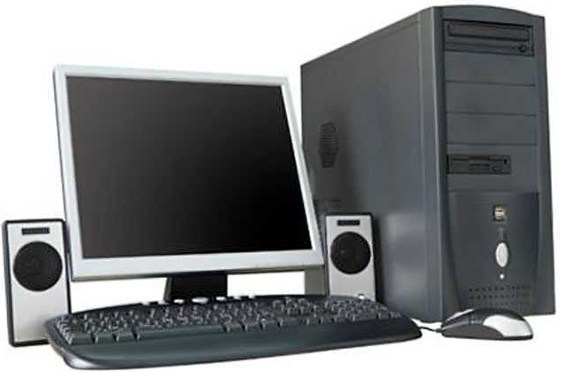

Компоненты персонального компьютера
Персональный компьютер, ПК (англ. personal computer, PC), ПЭВМ (персональная электронно-вычислительная машина) -компьютер, предназначенный для эксплуатации одним пользователем. К ПК условно можно отнести также и любой другой компьютер, используемый конкретным человеком в качестве своего личного компьютера. Подавляющее большинство людей используют в качестве ПК настольные и различные переносные компьютеры.
|  |
Существует несколько видов персонального компьютера:
|
Персональный компьютер состоит из: системного блока, монитора, клавиатуры, мышки. Опцианально могут присутствовать устройства ввода, такие как сканер, веб-камера и т.д. Также могут присутствовать дополнительные устройства вывода, например принтер, плоттер, каттер.

|
Системный блок - это основной компонент ПК. Внутри системного блока находятся основные компоненты компьютера: |